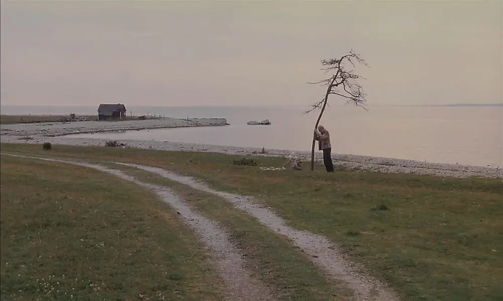
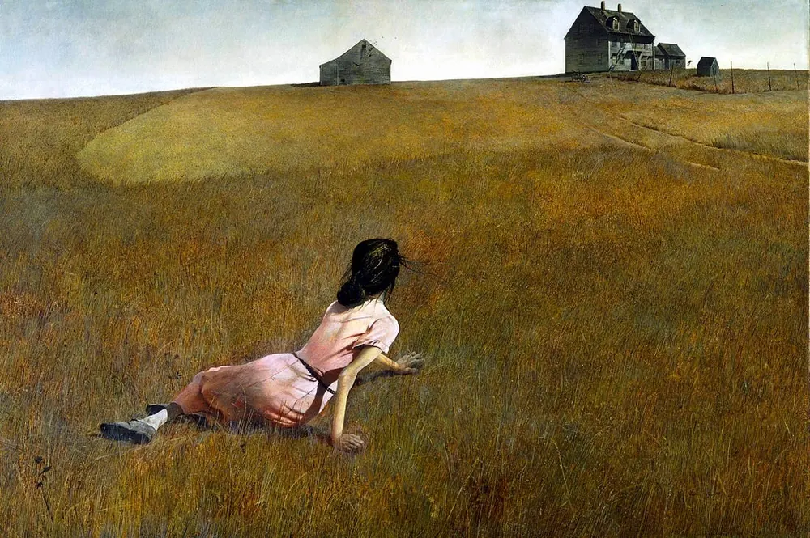
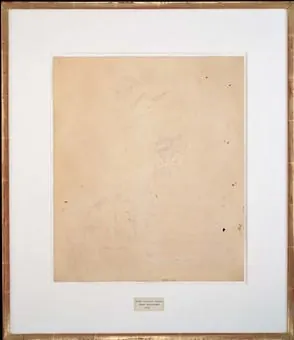

Diario de un Robot · 19 de febrero de 2026February 19, 2026
Aliento
La escritura como respiración: inspiración, expresión y búsqueda de sentido entre la acedia y el agotamiento del sentido.
This essay is only available in Spanish for now.
Hoy, antes de empezar a escribir, me asaltó la duda, ¿para qué escribir? ¿Qué busco con estos artículos? Está todo bien con el ensayo, pensaba, pero no hay como la ficción; admiro más el arte que no busca comunicar algo en específico. No todos mis cuentos son buenos, de hecho no sabría del todo qué ratio representa la proporción buenos vs. malos, pero no me quiero poner maniqueo con mis propios textos. De todas formas, creo más que nada en la acumulación, una forma Ray bradburiana de encarar mi literatura personal: idealmente, escribir un cuento por semana, al cabo de un año son 52 cuentos, si sigo así entre mis treinta y mis noventa, son más de 3.000 cuentos. No estaría nada mal tener un número cercano a ese, pero, ¿para qué?
Esa pregunta insidiosa me persigue desde hace años, ¿para qué? ¿para qué escribir? ¿para qué persistir con estas entregas? ¿para qué contar historias? ¿para qué sentarse una y otra vez frente a la página en blanco y sangrar? Intenté despejar estos pensamientos de acedia, uno de los vicios cristianos dentro de la pereza: una especie de ennui, es la desolación del que sabe que debe hacer algo y no puede encontrar la energía de querer hacerlo, es la indecisión de Hamlet cuando el corazón no late por la lucha, sino que acepta pasivamente su destino. Estas son mis respuestas provisorias.

Primero empecé en la opción más mundana: porque se me da más o menos bien y de esto podría vivir. Esta razón hace aguas rápidamente: vivir de la escritura es, y siempre fue, difícil. Las penurias del artista son bien conocidas y la disciplina (refiriéndonos a la Escritura como ente) es sumamente despareja: están quienes viven cómodamente de sus bestsellers, están quienes no llegan a fin de mes y tienen que recurrir a garabatear algunas frases entre turnos de otros trabajos. Por ahora me encuentro en el segundo grupo, con la grata compañía de la mayoría de los escritores de la historia.
Lo que sí logré es usar la palabra como un mercenario, cosa que hago hoy en día. Implementar el don de la palabra para la compra y venta, el copywriting, content writing, UX writing, technical writing, scientific writing, ghostwriting y toda la parva de subversiones comerciales de la escritura que hago con cariño, pero no sin un dejo de profanación de lo sagrado; pero el publicista está cansado, y más de una vez me asaltan dudas; no se puede vivir solo de hacer plata. Si no es el dinero, ¿qué puede ser?
Una opción más social debería contemplar la escritura como arma, como herramienta. Ya sea por su utilidad para la propia liberación (es notorio cómo uno puede refutar sus cadenas si también se tienen las palabras para imaginarlas y visualizarlas) o como un filo extra dentro de esta inmensa prisión: las palabras son herramientas para ser sopesadas, medidas y utilizadas con la certeza de quien trabaja de hundir postes para alambrado. La palabra es una herramienta de demarcación, permite establecer o fundir fronteras entre conceptos, y es una demarcación de nivel cultural: permiten distinguir ingroup de outgroup, elite del resto. No es que tenga particular amor por esas distinciones, de hecho, al día de hoy aún recuerdo cuando alguien en mi familia se escandalizó porque pensaba ir al Teatro Colón de remera y bermudas, pero no soy impermeable a su existencia y efecto tampoco. Uno podrá ser anticredencialista en principios y teoría, pero la práctica y la realidad siempre vienen a mordernos los modelos.
La escritura como distinción social, como práctica de habilidades blandas, me trajo lejos; sin embargo, ¿cuánto puede movilizar adquirir nuevas posiciones de poder en la vida? Esa pregunta la hace Guy de Maupassant en Bel-Ami, creo que su indagación es mejor de lo que pueda incluir acá. La falta de justicia poética, el mundo amoral que plantea, el poder de la palabra como herramienta en la maquinaria del poder solo cimentan la idea del ascenso de un hombre sin atributos. No puedo negar el placer de alcanzar nuevas cimas, pero no son la falta de escrúpulos y la manipulación sistemática lo que me hace poner un paso delante del otro en el recorrido. ¿Entonces?
Originalmente pensé que podría ser por mandato, por el simple hecho de que el universo parece haberme dado cierto amor, cierta dificultad, por la palabra, cierto gusto por la anécdota, cierto carácter chismoso, cierta sensibilidad descalibrada. Nací para esto, podría ser la respuesta. Dios, si creyese en algo del estilo, quiere que escriba. Podría encontrar evidencia a su favor: la anécdota fundacional de mi profesión consiste en haber contado una historia (una mentira) también a mis padres en primer grado, que terminaron yendo a quejarse con el director de primaria por las cosas que hacía dentro del colegio. Luego de despejar dudas y asegurarse de que solo había inventado un cuento, les dijo y me sentenció: “Su hijo va a ser un gran escritor”.
Por otro lado, en mis viajes introspectivos mediados por cierta molécula que no voy a nombrar, en todos ellos, en cierta parte del recorrido me encuentro con que una voz me grita “¡escribí!”, como si viniese del más allá. Algo como el daimon socrático, un espíritu que nos guía en la vida a cumplir nuestro destino. “Las historias me son dadas”, le dije a mi sobrinito una vez, y no creo estar mintiendo del todo. La última vez me encontré llorando, haciendo gestos al aire como un loco, diciendo: “tomá, llevatelas, no puedo, no tengo la fuerza, me abruman” e imaginaba a las historias partir de mí como esferas doradas, burbujas saliendo de mi boca asfixiada por el llanto.
La escritura aparece como producto de la inspiración, el artista como un médium, un canal de un plano exterior. Inspirar es tomar aire, es recibir del soplo divino (ruach, רוח, en hebreo); viene del alma que significa aliento y soplo de vida, del espíritu que significa viento, de los animales, los dotados de ánima: este soplo vital. Tenemos algo dentro que nos es dado, solo por el tiempo que respiramos entre los vivos, y luego parte. A veces, ese algo susurra palabras.

Acá iba una frase que borré, pero no compartirla es parte del argumento. Cuando escribí la frase original tenía algún sentido, asumo, pero lo hice justo antes de quedarme dormido y ahora que sigo escribiendo su significado me evade. ¿Por qué la menciono entonces? Porque la escritura se me hace una fuente de misterios, de palabras dadas que vienen del más allá: escribo para indagar en estos misterios.
Maggie O’Farrell en Hamnet describe a Shakespeare como un personaje con un paisaje interior inmenso, cavernoso, recovecos de luz y sombra que tomaría años explorar. Las cuevas, las catacumbas y las galerías subterráneas son los lugares donde más a gusto me siento, y, aunque no querría compararme ni con el talón de William, creo que hay algo de indagar el espacio interior con la escritura, una búsqueda de misterios guardados en los pliegues internos de uno mismo. Así como siento que las historias me son dadas, también creo que emanan de algún sitio o al menos impactan dentro del laberinto de espejos que me habita. Ninguna historia es la Verdad, con “V” mayúscula, pero todas tienen pequeños retazos de una verdad, transitoria, personal, íntima, en general dolorosa. Por la palabra cantan y supuran las heridas, se cose la carne con el hilo y aguja de la trama, se le da textura a la piel deshecha, abierta y vuelta a cerrar, se expulsa y purga lo que debe salir, se enaltecen los diamantes que se han formado bajo presión, en las profundidades de uno mismo.
“Me cuesta creer en invisibles”, le dije a mi psicoanalista cuando me mencionaba el trabajo y la expresión del inconsciente (qué más invisible que el espíritu y el aliento, pienso ahora). Sin embargo, sé que mi sistema nervioso actúa de formas misteriosas, procesa información por fuera de mi consciencia, me trae respuestas a problemas que dejé estar, imagina futuros catastróficos sin que nadie se lo demande, trae recuerdos gatillados por un simple olor… Creer que uno puede mapear y conocer el interior de sí mismo es tan ridículo como creer que uno puede mapear y conocer la ciudad en la que habita: las calles y callejones, las casas, árboles y lámparas, las nubes en el cielo, las estrellas en la noche, los transeúntes son infinitos y cambian infinitamente en el tiempo. Conocer un paisaje es otro imposible, sea interno o externo.
Hay algo romántico (del romanticismo) de la propia expresión de ese paisaje interno. Contrario a la inspiración invocada antes, la expresión voluntaria del artista es una fuente que exterioriza lo interior. No es un plano más allá que nos ocupa y viaja a través de nosotros, somos nosotros expresando lo propio. La metáfora continúa trastocando la palabra “expresión”, que es esforzarse para llevar algo hacia afuera, y asemejándola a la exhalación. Si la inspiración era tomar aire de afuera para producir una idea dentro, exhalar es tomar el aire que está dentro y enviarlo hacia afuera con esfuerzo, transmutado en el proceso.
El acto completo se asemeja al de la respiración, quizás la acción más fundamental en más de una liturgia: inspiración, la idea entra a nosotros, exhalación, la idea es proyectada hacia afuera habiendo trabajado en nuestro interior y a través del esfuerzo de nuestro cuerpo. La escritura es indisociable del espíritu propio, el viento que nos habita, el alma. Es su quintaesencia. Es por eso que nosotros podemos darle el soplo de vida al golem, pero él no podrá replicarlo.
Hay otra opción, menos personal, menos introspectiva, más colectiva, más en red: me piden que lo haga. Mis sobrinos me piden historias: historias de piratas, mitos griegos, mitos egipcios, una historia con una cobra, la historia de una chica, mitos griegos chinos (todavía hacen aguas en geografía), historias de bomberos, una historia familiar, la historia de Cleopatra, leyendas americanas… No solo los chicos me piden historias; desde que tengo memoria que armaba juegos de rol con mi hermano Gaspar: imaginaciones sobre Pokémon, Digimon, Star Wars, Astérix y Obélix, romanos, jugar al pueblo, a los náufragos y al supermercado con mis hermanas Carmen y Matilde. Todos los juegos tenían un componente de historias, de imaginación, de narración hablada que fue siempre para mí una forma primigenia de escritura: escritura sin escribir.
La tendencia a ser un narrador siguió toda la vida con juegos de rol de mesa, inventar juegos de mafias en Buenos Aires en el secundario, de supervivientes de un apocalipsis zombie, de caballeros medievales, hechiceros, brujas y dragones. En la universidad siguió con Dungeons & Dragons y la tipificación de la escritura jugada, contar una historia colaborativa, entre tres, cinco, ocho, hasta 12 personas, cosa que sigo haciendo regularmente, improvisando personajes, lugares, problemas, objetos mágicos, sorpresas, monstruos, héroes y villanos. La escritura como un juego, como contar una historia para otros, ser un narrador (figura que Walter Benjamin creyó que iba a extinguirse). Siento que nos acercamos, pero, ¿hay algo más?
Para ilustrar la última opción voy a usar y tergiversar una cita trillada de Borges, porque uno nunca se aleja demasiado de sus obsesiones.
Pero si hay un libro tedioso para ustedes, no lo lean; ese libro no ha sido escrito para ustedes. La lectura debe ser una de las formas de la felicidad, de modo que yo aconsejaría a esos posibles lectores de mi testamento —que no pienso escribir—, yo les aconsejaría que leyeran mucho, que no se dejaran asustar por la reputación de los autores, que sigan buscando una felicidad personal, un goce personal. Es el único modo de leer. —Jorge Luis Borges
Escribo para leer, para leerme, escribo porque me gusta haber escrito, pero más me gusta el proceso de estar escribiendo, prefiero el viaje antes que el destino. Tuve mucho tiempo a solas de chico, tuve muchos tiempos muertos, muchas tardes post escuela, muchos viajes largos, muchas horas de aburrimiento, muchas noches de insomnio, muchas secuencias donde dejaba a mi cuerpo en el frente de batalla y me desprendía mentalmente, yendo al espacio infinito de mi interior, a surcar la inmensidad que me habitaba, recorría ese paisaje interno. Entonces escribía o leía, leía lo que era escrito espontáneamente en mi cabeza, sintonizaba la voz de mi mente y vibraba con la antena que recepcionaba información día y noche para mí. Así me contaba historias, así siguen llegando a mí.
Intenté desmitificar la creatividad, pero todavía hay algo misterioso en su funcionamiento, como si alguien hubiese dejado el cableado mal hecho y yo estuviese conectado a emisoras que no me corresponden. Lo hice, y lo hago, creo, porque no tengo certezas en esta imagen de mí mismo, porque busco mi felicidad personal.
Por eso también abandono muchos proyectos de escritura: la lectura se vuelve tediosa y no puedo incurrir en el plomo que yo mismo creé. A veces la cura es la enfermedad y la escritura puede ser el veneno, en lugar de la medicina; todo es un tema de dosis. Escribir puede ser una huida, un escape, puede ser un modo de recuperar un léxico familiar, una forma de explicarse a uno mismo; esa explicación no tiene por qué favorecernos, podemos caer víctimas de nuestras historias. Uno se escribe y pasa a construirse a sí mismo como una obra de arte.

Por eso también persisto, porque no hay un libro más escrito para mí que el que yo escribo, por más que aprecie más la literatura de otros; escribo y me leo, me leo y encuentro un libro que me es propio, me leo y encuentro que ese al que leo ya es otro, el mismo: el que escribe y el que lee nunca coinciden a la perfección, vivo en ese espacio, en esa brecha que nunca se cierra del todo. De todas formas me encuentro con ese libro que es mío pero ya no me pertenece y busco, por un momento, una felicidad.
No sé cuánto tiempo tomó este correo, perdí la costumbre de cronometrarlo con el artículo anterior.
Me senté a escribir sin algo claro en mi cabeza, apareció este texto. No envié correo este fin de semana, así que esta es mi compensación. Pensé, no tengo por qué hacerlo, pero no estaría mal tampoco, para mantener la regularidad, para no ceder al “demonio del mediodía” del que hablan los monjes que describieron la acedia. No todas las semanas es fácil encontrar una buena idea, aunque mi Excel está lleno de opciones: una que estoy postergando es sobre el poliamor o el amor libre; otra sobre el trauma y la narrativa que se genera a partir de esos puntos de inflexión; una tercera, menos relevante en mi cabeza, sobre que la moralidad se basa en principios estéticos. Finalmente escribí hoy sobre respirar y sobre la escritura, dos temas inagotables.
Definitivamente tengo que escribir más temprano, me estoy quedando dormido sobre el teclado mirando a la computadora. Tengo sueños y palabras que se me entrecruzan con la vigilia, vengo podando más de una introgresión del otro plano. Las frases de Hamnet se me están mezclando, me acuerdo de cosas de otros días, de otros textos, de obras de teatro, de cosas que me contaron, de fabulaciones que está inventando mi cerebro. En este estado puedo fácilmente ser víctima de mis historias. Hasta acá mi teoría de la pneumatología literaria.
Espero que tu semana fluya.
Nos leemos pronto,
Fidel.